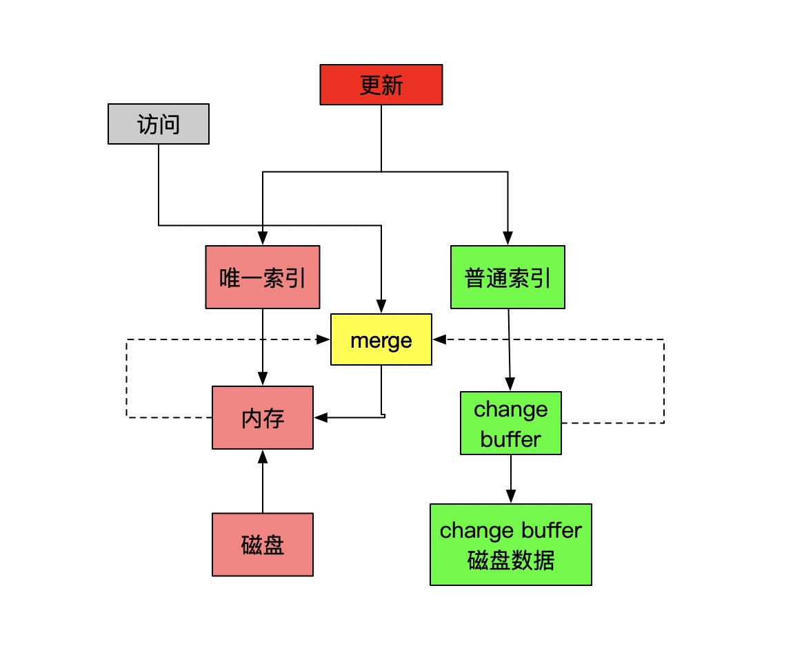

性能提升
方案
- 加速大概率事件
- 通过流水线提高性能
- 通过预测提高性能

生命的意义是成为你自己！


数据库连接池（复用连接）、合理设置应用的最大进程，线程数、直接内存访问DMA、零拷贝技术
#!/bin/bash
#
# execsnoop - trace process exec() with arguments.
# Written using Linux ftrace.
#
# This shows the execution of new processes, especially short-lived ones that
# can be missed by sampling tools such as top(1).
#
# USAGE: ./execsnoop [-hrt] [-n name]
#
# REQUIREMENTS: FTRACE and KPROBE CONFIG, sched:sched_process_fork tracepoint,
# and either the sys_execve, stub_execve or do_execve kernel function. You may
# already have these on recent kernels. And awk.
#
# This traces exec() from the fork()->exec() sequence, which means it won't
# catch new processes that only fork(). With the -r option, it will also catch
# processes that re-exec. It makes a best-effort attempt to retrieve the program
# arguments and PPID; if these are unavailable, 0 and "[?]" are printed
# respectively. There is also a limit to the number of arguments printed (by
# default, 8), which can be increased using -a.
#
# This implementation is designed to work on older kernel versions, and without
# kernel debuginfo. It works by dynamic tracing an execve kernel function to
# read the arguments from the %si register. The sys_execve function is tried
# first, then stub_execve and do_execve. The sched:sched_process_fork
# tracepoint is used to get the PPID. This program is a workaround that should be
# improved in the future when other kernel capabilities are made available. If
# you need a more reliable tool now, then consider other tracing alternatives
# (eg, SystemTap). This tool is really a proof of concept to see what ftrace can
# currently do.
#
# From perf-tools: https://github.com/brendangregg/perf-tools
#
# See the execsnoop(8) man page (in perf-tools) for more info.
#
# COPYRIGHT: Copyright (c) 2014 Brendan Gregg.
#
# This program is free software; you can redistribute it and/or
# modify it under the terms of the GNU General Public License
# as published by the Free Software Foundation; either version 2
# of the License, or (at your option) any later version.
#
# This program is distributed in the hope that it will be useful,
# but WITHOUT ANY WARRANTY; without even the implied warranty of
# MERCHANTABILITY or FITNESS FOR A PARTICULAR PURPOSE. See the
# GNU General Public License for more details.
#
# You should have received a copy of the GNU General Public License
# along with this program; if not, write to the Free Software Foundation,
# Inc., 59 Temple Place - Suite 330, Boston, MA 02111-1307, USA.
#
# (http://www.gnu.org/copyleft/gpl.html)
#
# 07-Jul-2014 Brendan Gregg Created this.
### default variables
tracing=/sys/kernel/debug/tracing
flock=/var/tmp/.ftrace-lock; wroteflock=0
opt_duration=0; duration=; opt_name=0; name=; opt_time=0; opt_reexec=0
opt_argc=0; argc=8; max_argc=16; ftext=
trap ':' INT QUIT TERM PIPE HUP # sends execution to end tracing section
function usage {
cat <<-END >&2
USAGE: execsnoop [-hrt] [-a argc] [-d secs] [name]
-d seconds # trace duration, and use buffers
-a argc # max args to show (default 8)
-r # include re-execs
-t # include time (seconds)
-h # this usage message
name # process name to match (REs allowed)
eg,
execsnoop # watch exec()s live (unbuffered)
execsnoop -d 1 # trace 1 sec (buffered)
execsnoop grep # trace process names containing grep
execsnoop 'udevd$' # process names ending in "udevd"
See the man page and example file for more info.
END
exit
}
function warn {
if ! eval "$@"; then
echo >&2 "WARNING: command failed \"$@\""
fi
}
function end {
# disable tracing
echo 2>/dev/null
echo "Ending tracing..." 2>/dev/null
cd $tracing
warn "echo 0 > events/kprobes/$kname/enable"
warn "echo 0 > events/sched/sched_process_fork/enable"
warn "echo -:$kname >> kprobe_events"
warn "echo > trace"
(( wroteflock )) && warn "rm $flock"
}
function die {
echo >&2 "$@"
exit 1
}
function edie {
# die with a quiet end()
echo >&2 "$@"
exec >/dev/null 2>&1
end
exit 1
}
### process options
while getopts a:d:hrt opt
do
case $opt in
a) opt_argc=1; argc=$OPTARG ;;
d) opt_duration=1; duration=$OPTARG ;;
r) opt_reexec=1 ;;
t) opt_time=1 ;;
h|?) usage ;;
esac
done
shift $(( $OPTIND - 1 ))
if (( $# )); then
opt_name=1
name=$1
shift
fi
(( $# )) && usage
### option logic
(( opt_pid && opt_name )) && die "ERROR: use either -p or -n."
(( opt_pid )) && ftext=" issued by PID $pid"
(( opt_name )) && ftext=" issued by process name \"$name\""
(( opt_file )) && ftext="$ftext for filenames containing \"$file\""
(( opt_argc && argc > max_argc )) && die "ERROR: max -a argc is $max_argc."
if (( opt_duration )); then
echo "Tracing exec()s$ftext for $duration seconds (buffered)..."
else
echo "Tracing exec()s$ftext. Ctrl-C to end."
fi
### select awk
if (( opt_duration )); then
[[ -x /usr/bin/mawk ]] && awk=mawk || awk=awk
else
# workarounds for mawk/gawk fflush behavior
if [[ -x /usr/bin/gawk ]]; then
awk=gawk
elif [[ -x /usr/bin/mawk ]]; then
awk="mawk -W interactive"
else
awk=awk
fi
fi
### check permissions
cd $tracing || die "ERROR: accessing tracing. Root user? Kernel has FTRACE?
debugfs mounted? (mount -t debugfs debugfs /sys/kernel/debug)"
### ftrace lock
[[ -e $flock ]] && die "ERROR: ftrace may be in use by PID $(cat $flock) $flock"
echo $$ > $flock || die "ERROR: unable to write $flock."
wroteflock=1
### build probe
if [[ -x /usr/bin/getconf ]]; then
bits=$(getconf LONG_BIT)
else
bits=64
[[ $(uname -m) == i* ]] && bits=32
fi
(( offset = bits / 8 ))
function makeprobe {
func=$1
kname=execsnoop_$func
kprobe="p:$kname $func"
i=0
while (( i < argc + 1 )); do
# p:kname do_execve +0(+0(%si)):string +0(+8(%si)):string ...
kprobe="$kprobe +0(+$(( i * offset ))(%si)):string"
(( i++ ))
done
}
# try in this order: sys_execve, stub_execve, do_execve
makeprobe sys_execve
### setup and begin tracing
echo nop > current_tracer
if ! echo $kprobe >> kprobe_events 2>/dev/null; then
makeprobe stub_execve
if ! echo $kprobe >> kprobe_events 2>/dev/null; then
makeprobe do_execve
if ! echo $kprobe >> kprobe_events 2>/dev/null; then
edie "ERROR: adding a kprobe for execve. Exiting."
fi
fi
fi
if ! echo 1 > events/kprobes/$kname/enable; then
edie "ERROR: enabling kprobe for execve. Exiting."
fi
if ! echo 1 > events/sched/sched_process_fork/enable; then
edie "ERROR: enabling sched:sched_process_fork tracepoint. Exiting."
fi
echo "Instrumenting $func"
(( opt_time )) && printf "%-16s " "TIMEs"
printf "%6s %6s %s\n" "PID" "PPID" "ARGS"
#
# Determine output format. It may be one of the following (newest first):
# TASK-PID CPU# |||| TIMESTAMP FUNCTION
# TASK-PID CPU# TIMESTAMP FUNCTION
# To differentiate between them, the number of header fields is counted,
# and an offset set, to skip the extra column when needed.
#
offset=$($awk 'BEGIN { o = 0; }
$1 == "#" && $2 ~ /TASK/ && NF == 6 { o = 1; }
$2 ~ /TASK/ { print o; exit }' trace)
### print trace buffer
warn "echo > trace"
( if (( opt_duration )); then
# wait then dump buffer
sleep $duration
cat -v trace
else
# print buffer live
cat -v trace_pipe
fi ) | $awk -v o=$offset -v opt_name=$opt_name -v name=$name \
-v opt_duration=$opt_duration -v opt_time=$opt_time -v kname=$kname \
-v opt_reexec=$opt_reexec '
# common fields
$1 != "#" {
# task name can contain dashes
comm = pid = $1
sub(/-[0-9][0-9]*/, "", comm)
sub(/.*-/, "", pid)
}
$1 != "#" && $(4+o) ~ /sched_process_fork/ {
cpid=$0
sub(/.* child_pid=/, "", cpid)
sub(/ .*/, "", cpid)
getppid[cpid] = pid
delete seen[pid]
}
$1 != "#" && $(4+o) ~ kname {
if (seen[pid])
next
if (opt_name && comm !~ name)
next
#
# examples:
# ... arg1="/bin/echo" arg2="1" arg3="2" arg4="3" ...
# ... arg1="sleep" arg2="2" arg3=(fault) arg4="" ...
# ... arg1="" arg2=(fault) arg3="" arg4="" ...
# the last example is uncommon, and may be a race.
#
if ($0 ~ /arg1=""/) {
args = comm " [?]"
} else {
args=$0
sub(/ arg[0-9]*=\(fault\).*/, "", args)
sub(/.*arg1="/, "", args)
gsub(/" arg[0-9]*="/, " ", args)
sub(/"$/, "", args)
if ($0 !~ /\(fault\)/)
args = args " [...]"
}
if (opt_time) {
time = $(3+o); sub(":", "", time)
printf "%-16s ", time
}
printf "%6s %6d %s\n", pid, getppid[pid], args
if (!opt_duration)
fflush()
if (!opt_reexec) {
seen[pid] = 1
delete getppid[pid]
}
}
$0 ~ /LOST.*EVENT[S]/ { print "WARNING: " $0 > "/dev/stderr" }
'
### end tracing
end
[22:44:58] Top 10 stacks with outstanding allocations: